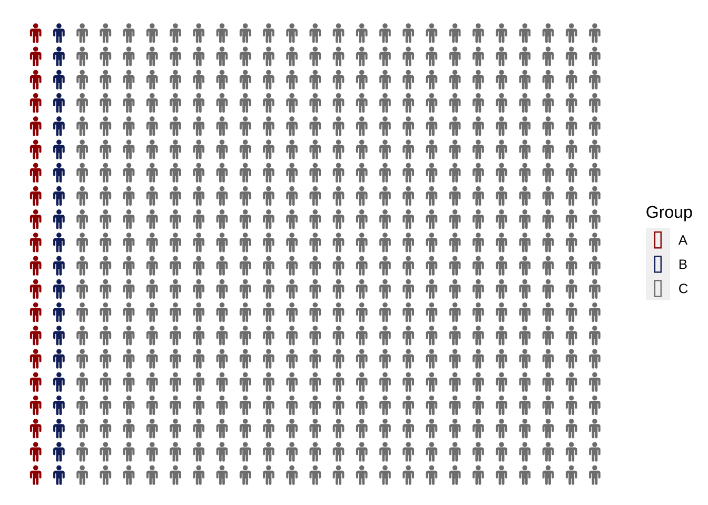

About the Disproportionality Index
Estimating Median Salary
Median salaries for each group were estimated using the following formula:
\[median = L + \frac{ (\frac{n}{2} – F) }{f} * w\]
Calculating DI
In this analysis, Disproportionality Index (DI) is used as a measure of equitable representation. It is calculated as below.
\[\frac{\%_{Group\: X; \:salary\: range \: i}}{\% _{All \:Employees; \:salary\: range \: i}} = DI _{Group\:X; \:salary\:range\:i}\]
For example, 23.51% of Black employees and 16.70% of all employees are are within the <60K salary range. This gives us a DI of 1.41.
\[ DI_{Black \: employees; <60K } =\frac{23.51\%}{16.70\%} = 1.41\]
For a table of DI’s per year, please see here.
Understanding DI - An Example
Suppose that we have a department of 500 employees. There are two groups of self-identifying minority employees, A and B. Group C is composed of the majority at 460 employees. Groups A and B make up 4% of employees at 20 employees each, which happens to mirror the Canadian population. At a glance, representation seems equal.
However, if you take a closer look at how the 20 employees from group A and B are distributed across salary levels, a different story appears. Group A is equally distributed among salary level, but the majority of group B employees remain at the lowest salary levels.

Calculating DI further illustrates the differences in salary distribution. Above a DI of 1, a group’s representation at a salary level is higher than the average of all employees. Below a DI of 1, a group’s representation at a salary level is lower than the average of all employees.